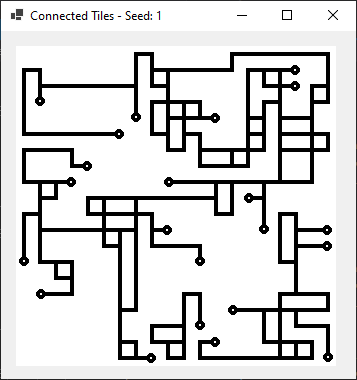
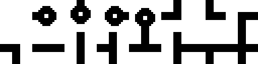
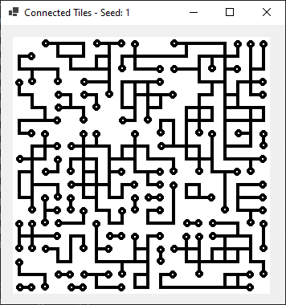
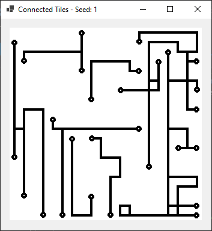
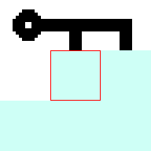
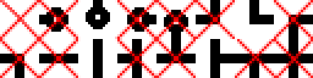
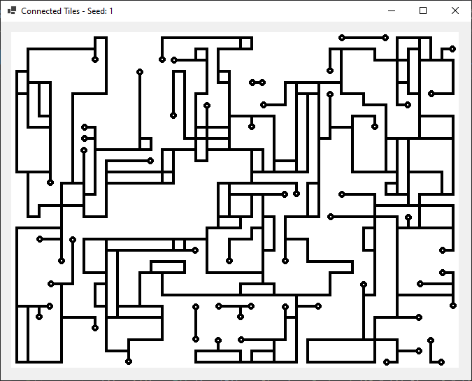

Connected Tiles
1. Introduction
After watching a programming video on Wave Function Collapse (WFC from now on) I got inspired to play around with connected tiles. I didn't want a direct copy, so I made a challenge of my own with randomness and connected tiles. And as far as I understood the concept of WFC, it shall contain a bit more than what I did, but the basic idea is similar (or even the same?), but it might be called somehting else.

2. Basic Functionality
I started with deciding on what tileset to use. I made one myself and it only contains a black line (the connecting one) on a white background. The tiles are 16x16 pixels and to save a bit of time on programming, I included all the rotated parts as well. In a future version, this set should only contain six tiles. To clearer indicate a "start/stop" tile I made it into a blob. It makes the tiles look more like a circuit board than a road system, but either one works for me. (I've seen a few examples of WFC using circuit board tilesets.)

The Tile class is very simple, and because I don't need to handle rotation in this first test, I simply have a boolean value for each side with a connection (Up, Down, Left, Right). And when selecting the next tile I will only look at the adjacent neighbors going from left to right, top to bottom (which means I only need to match with up and left). Someone called this a Linear Scanline method, but I don't know if that's an established term. Most examples of WFC I've seen seem to use more of a floodfill style, and maybe even in order of tiles with lowest entropy/possible choices first. But in this post, we'll keep it simple!
Because I start in the top-left corner, I obviously can't match tiles above or to the left, so I decided to treat all tiles off-grid as having no connections. It isn't very important but that's why there are no connections going off-grid, and doing this check first made the code for the next step a bit simpler.
bool connectionAbove = false;
bool connectionLeft = false;if (y != 0) // If we're on top row we'll keep connectionAbove as false
if (field[y - 1, x].Down == true) // Check if tile above has a connection (downwards)
connectionAbove = true;if (x != 0) // Same as before, but with leftmost column
if (field[y, x - 1].Right == true) // Check connection in tile to the left
connectionLeft = true;List<Tile> possibleTiles = new List<Tile>();
possibleTiles = (from connections in tiles
where connections.Up == connectionAbove
where connections.Left == connectionLeft
select connections).ToList();With one simple "query" we have a list of tiles that connects correctly to tiles above and to the left. The fun thing with Lists is that we can do a sub-selection with new parameters for those tiles. And then again: I actually only check for one additional thing: if we are on bottom row or rightmost column (same as for top row or leftmost column). In those cases I want to remove tiles connecting downwards or the the right.
if (y + 1 == sizeY)
possibleTiles = (from connections in possibleTiles
where connections.Down == false
select connections).ToList();if (x + 1 == sizeX)
possibleTiles = (from connections in possibleTiles
where connections.Right == false
select connections).ToList();We finally have a list of possible tiles to place. But they are equally probable (towards each other within the final selection) and creates very boring patterns. Looking at it, I just get a feeling of random noise, and it's not what I'm after.

3. Weights and Probability
A very simple solution (or addon) is to add weigths to tiles. So I included one more value in the Tile class:
public class Tile
{
public Bitmap Image { get; }
public bool Up { get; }
public bool Down { get; }
public bool Left { get; }
public bool Right { get; }
public int Weight { get; }
public Tile(Bitmap image, int weight, bool up, bool down, bool left, bool right)
{
this.Image = image;
this.Weight = weight;
this.Up = up;
this.Down = down;
this.Left = left;
this.Right = right;
}
}Now when I declare the tiles, I specify a weight to each tile that will affect how common they are. In the previous example, it would mean that all have equal weight. To get the desired pattern, simply increase the ones you want more of, and after that it's a matter of tuning. So let's see how it looks if I give empty tiles a weight of 30, straight "roads" a weight of 15 and keeping the rest as 1.

As expected, many straight lines and lots of space! There are probably many ways to implement a weight system, I made up one myself and did not look for other methods for this project. It seems to be working for this application though, so let's look at how it works. I have made up an example based on the values used in the previous screenshot (weight 15 for straights). If we have this scenario:

It is time to place the center tile, and the List of possibleTiles now only contains four tiles that fit the center piece:

Without weigths, it would be the same probability for either one of these tiles, but here we have 15 times higher weight for the straight connection. It doesn't always mean 15 times more probable though, it depens on how many other tiles we have, and what weights they have. We will look at the ratio of tile weigth versus the total weigth.
int totalWeight = 0; // To calculate total weight of possibleTiles
for (int i = 0; i < possibleTiles.Count; i++)
{
totalWeight += possibleTiles[i].Weight; // Add to total weight
}
int[] range = new int[totalWeight]; // Create array with same length as weightFirst I calculate a total weight for all possible tiles. In this example it would mean:
1 + 1 + 15 + 1 = 18Then I create an array of integers, 18 numbers long, and fill it with the corresponding index from possibleTiles
int index = 0; // What slot in above array we shall fill
for (int i = 0; i < possibleTiles.Count; i++) // Loop through the candidates...
{
for (int j = 0; j < possibleTiles[i].Weight; j++) // ...and "weight" times...
{
range[index] = i; // ...to fill with that candidate number
index++;
}
}In this example, it would mean that 15 out of the 18 values in the array range get the number (index) 2 (which corresponds to the straight tile):
[0, 1, 2, 2, 2, 2, 2, 2, 2, 2, 2, 2, 2, 2, 2, 2, 2, 2, 2, 2, 3]After this, simply randomize a number and we have a lucky winner of the center tile slot!
int selected = rnd.Next(totalWeight); // Random value in total weight...
return possibleTiles[range[selected]]; // ...to get the weighted resultWith the odds in this example, I wouldn't call the straight connection very "lucky" with a ~83% probability. The other three have ~6% chance each (so in this example the straight one is eactly 15 times more probable than one of the other individuals, but only 5 times as probable than any other tile). The tricky part is now to find a good balance between them all. A larger field helps for sure, here I have mixed things up a bit and increased the size.

4. Ending Words
Before we end I should mention the seed (seen in the title in each screenshot). It's not of importance for this test project, but I like the idea of including seeds into the projects using a random number generator. It makes it easier to go back in case of problems, or to share an interesting pattern.
And that's how far this project reaches, I'm happy with the outcome, and I would really like to step things up a bit with more interesting tiles (like roads, parks and different types of buildings), try to add more rules but most of all use tiles with more connections per side. If I would be using the same tileset as in this post, using three connections per side, the "road" would be the center part of each side and every tile would have a total of eight connections.